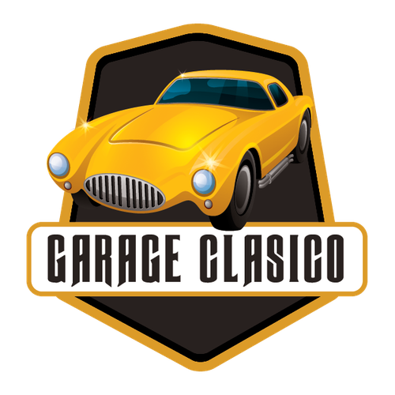

Brasa Loca
Página web para ordenar comida rápida, con varios tipos de comida, realizada en Html, Css y PHP. Este es un proyecto que tuve que realizar para un trabajo de la universidad, al principio fue difícil, y tuvo mucho problemas con el posicionamiento y el overflow, pero aplique todo lo que he aprendido y aprendí mucho de los errores que iban surgiendo, al final quede satisfecho con el resultado.

Batabit
Página web para intercambio de criptomonedas. Este es un proyecto que realicé con la ayuda de un curso en Platzi, la idea era maquetar desde el Mobile, para que se adaptara a todos los tamaños de los dispositivos, aprendí mucho en este curso y realizando este proyecto, al final quedo muy bien y pude ver el desarrollo de una página web de otra forma y la que para mí es la más indicada, que es el Mobile First.

Venta de Garage
Este proyecto fue el primero que hice, es una venta de garaje de autos clásicos, al ser de mis primeros proyectos cometí muchos errores y muchas cosas no salieron perfectas, es un diseño sacado de otro curso al cual yo le di mi propio toque, espero algún día poder terminarlo y tener los conocimientos necesarios para hacerlo completamente funcional y poder unificar todas las pantallas.



.png)